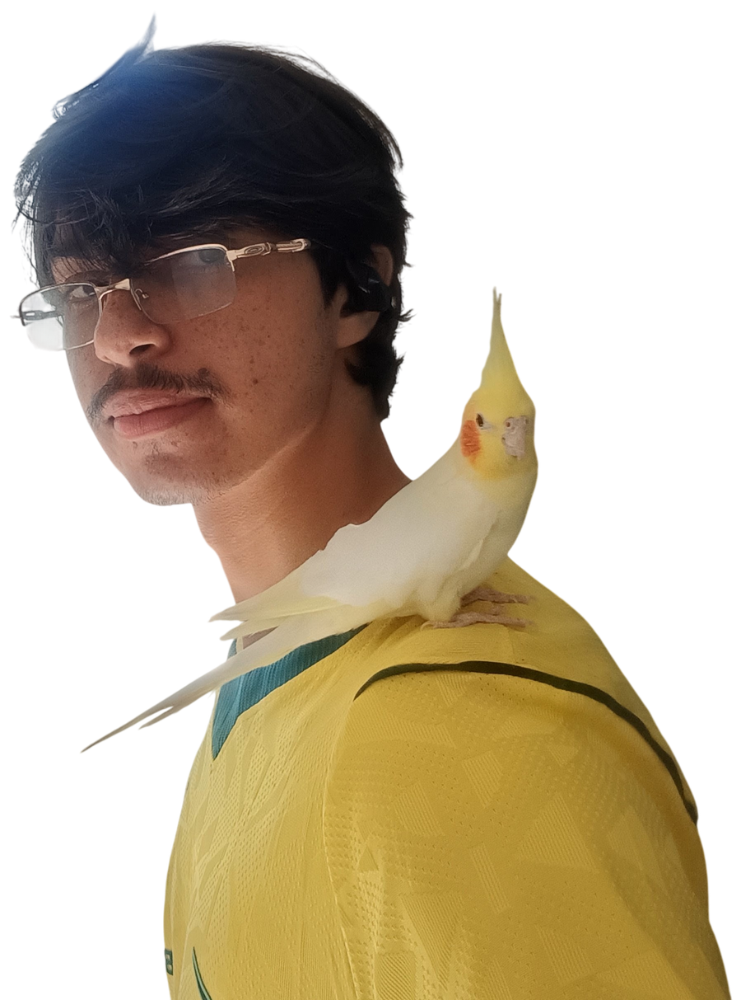

João Soares
Pesquisador no LECOM/UFMG focado em redes de ultra-alta performance, processamento de pacotes no kernel Linux com eBPF/XDP e otimização de latência. Engenheiro de software na Tarken com o ecossistema TypeScript, React & NestJS.
Sobre Mim
Sou graduando em Sistemas de Informação pela Universidade Federal de Minas Gerais (UFMG) e atuo na interseção entre pesquisa científica em sistemas de baixo nível e engenharia de software moderna.
No LECOM (Laboratório de Engenharia de Computadores), desenvolvo pesquisa aplicada com ênfase em aceleração de pacotes de rede no kernel via eBPF/XDP, simulações em ns-3 e processamento paralelo em GPU. Sou autor do AtesN-DS, resolvedor DNS recursivo indicado à Relevância Acadêmica na UFMG.
Na Tarken, integro o time de engenharia desenvolvendo soluções completas com TypeScript, React, React Native, NestJS e TypeORM, unindo robustez de testes automatizados com arquiteturas escaláveis.

"Construindo sistemas de alta eficiência: da aceleração no kernel Linux com eBPF/XDP à engenharia de software distribuída e escalável."
Trajetória
Estagiário Full Stack & Mobile
- Desenvolveu interfaces com React.js e MUI, reduzindo o tempo de desenvolvimento em 50%.
- Desenvolveu APIs REST escaláveis utilizando NestJS, TypeORM e TypeScript.
- Cobriu 80% dos fluxos críticos com Playwright E2E e testes unitários, reduzindo bugs de regressão.
- Utilizou Spec-Driven Development (SDD) com Claude para definir especificações e planos de execução.
- Gerenciou deployments AWS e análise de logs, garantindo alta disponibilidade e resolução de bugs.
Pesquisador Bolsista
- Desenvolveu um Resolvedor DNS de alto desempenho (eBPF/XDP | C | Go), com 213% mais vazão e 51% menos latência no kernel (Publicado no SBESC 2025).
- Autor do minicurso "Processamento de Pacotes em GPU" no SBRC 2025, abordando paralelismo massivo (CUDA/DOCA) e gerenciamento de memória.
- Desenvolveu cache com eBPF/XDP e aceleração por hardware no AtesN-DS, com até 2,85× mais vazão, 51% menos latência e 35% menos CPU.
- Desenvolveu sistema de mitigação de DDoS em tempo real com Machine Learning (RF/DT/NN) no XDP e AF_XDP contornando o kernel.
Monitor Bolsista (GAAL)
- Orientou alunos de toda a UFMG com suporte técnico em conceitos algébricos complexos, espaços vetoriais, transformações lineares e matrizes.
Bacharelado em Sistemas de Informação
- Formação sólida em sistemas operacionais, redes de computadores, arquiteturas distribuídas, estruturas de dados avançadas e engenharia de software.
- Destaque acadêmico em sistemas de baixo nível, aceleração de hardware e redes de alta velocidade.
Projetos em Destaque
Publicações & Reconhecimento
AtesN-DS: Acelerando o DNS com eBPF
Publicação e apresentação no XV Simpósio Brasileiro de Engenharia de Sistemas Computacionais. Apresenta o resolvedor DNS híbrido operando no kernel do Linux via eBPF/XDP com redução de 51% na latência e +213% na taxa de transferência.
Processamento de Pacotes Baseado em GPU (Capítulo de Livro)
Coautoria do Capítulo 1 do Livro de Minicursos do Simpósio Brasileiro de Redes de Computadores (SBRC 2025), analisando arquiteturas e pipelines de aceleração de pacotes em hardware massivamente paralelo.
Relevância Acadêmica na Semana do Conhecimento UFMG
Indicação concedida pelo Departamento de Ciência da Computação (DCC/UFMG) pelo impacto e inovação científica do projeto AtesN-DS na Semana de Iniciação Científica.
Japanese-Language Proficiency Test (JLPT)
Certificação de proficiência linguística japonesa, demonstrando capacidade de comunicação profissional e multidisciplinar.
Habilidades & Tecnologias
Kernel & Redes
Linguagens
Web & Mobile
Qualidade & Ferramentas
Pesquisa & Algoritmos
Idiomas
Vamos Conversar?
Estou sempre aberto a diálogos sobre engenharia de software de alta performance, pesquisa em sistemas e redes, ou oportunidades de colaboração.